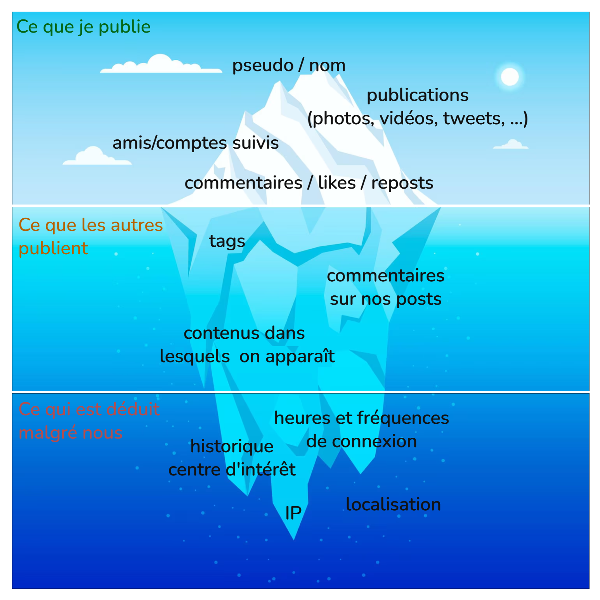
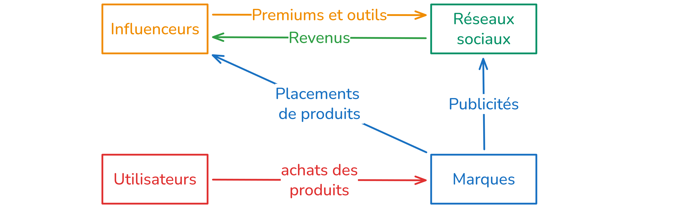

🌐 Les réseaux sociaux : identité numérique et modèle économique
Introduction
Les réseaux sociaux sont des plateformes en ligne qui permettent de créer un profil, d’échanger du contenu, et de se connecter à d’autres personnes.
| Réseau | Type de contenu | Thème principal | Utilisateurs |
|---|---|---|---|
| Textes, médias, événements | Vie sociale, actualités, groupes | ~3 milliards | |
| YouTube | Vidéos longues | Divertissement, musique, tutoriels | ~2,5 milliards |
| Images, vidéos courtes | Vie quotidienne, art, mode | ~2 milliards | |
| TikTok | Vidéos courtes | Divertissement, musique, tendances | ~1,5 milliard |
| Textes, images, CV | Réseaux professionnels, emploi | ~1 milliard | |
| Snapchat | Photos et vidéos éphémères | Vie quotidienne, échanges rapides | ~800 millions |
| Textes courts, images, liens | Actualités, opinions, politique | ~600 millions | |
| Discord | Messages, salons vocaux | Jeux, forums de discussion | ~500 millions |
| Images, Art | Création, design, décoration | ~450 millions | |
| Textes, liens, images | Forums, échanges d’opinions | ~400 millions | |
| Strava | Données sportives, images | Activités physiques, défis | ~100 millions |
| BeReal | Photos authentiques (1/jour) | Vie quotidienne, spontanéité | ~40 millions |
Identification et authentification
Définitions
Identification : Action de se faire connaître auprès d’un service Exemple : Entrer son nom d’utilisateur ou son adresse mail
Authentification : Action de prouver que l’on est bien la personne déclaré Exemple : Entrer son mot de passe, un code reçu par SMS, ou utiliser une empreinte digitale
Pourquoi s’authentifier ?
L’authentification permet :
- de protéger l’accès à ses données personnelles ;
- d’éviter l’usurpation d’identité ;
- de sécuriser les transactions (achats, démarches administratives, messageries, etc.).
Les principaux moyens d’authentification
Mot de passe
Méthode la plus courante.
Simple à mettre en place, mais facile à pirater si faible ou réutilisée.
Double authentification (2FA)
La double authentification (2FA) combine deux éléments différents pour vérifier l’identité d’un utilisateur.
Cela rend l’accès à un compte beaucoup plus sûr qu’un simple mot de passe.
Les deux éléments principaux :
- Quelque chose que l’on sait : un mot de passe, un code PIN, ou une réponse à une question secrète.
- Quelque chose que l’on a : un code temporaire envoyé par SMS, généré par une application d’authentification, ou une clé de sécurité physique.
Exemple concret
Pour se connecter à Facebook ou Google : après avoir entré le mot de passe, l’utilisateur doit saisir un code reçu sur son téléphone ou valider avec une clé de sécurité, ce qui empêche un pirate de se connecter même s’il connaît le mot de passe.
Clé de sécurité physique
Une clé de sécurité physique est un petit appareil USB ou NFC qui sert de “clé” numérique pour sécuriser l’accès à un compte.
Avantages
- Très sûre : impossible de se connecter sans la clé, même si le mot de passe est connu.
- Protège contre le phishing et les accès non autorisés.
- Utilisée dans les milieux professionnels ou pour les comptes sensibles.
Exemples d’utilisation sur les réseaux sociaux
- Facebook : activation dans les paramètres de sécurité pour sécuriser le compte.
- Google / YouTube : protège Gmail et YouTube.
- Twitter (X) : renforce la sécurité des comptes sensibles.
- LinkedIn : option pour sécuriser les comptes professionnels.
Les mots de passe : bonnes pratiques
Mauvaises habitudes courantes
- Utiliser le même mot de passe partout.
- Choisir des mots simples :
azerty,123456,motdepasse. - Réutiliser un ancien mot de passe après une fuite de données.
Bonnes pratiques
- Minimum 12 caractères (mieux : 16 ou plus).
- Mélanger lettres, chiffres, majuscules, minuscules et symboles.
- Aucune information personnelle (date de naissance, prénom, nom d’animal…).
- Utiliser une phrase secrète facile à retenir :
Exemple :MonChienMange2Croissants! - Ne jamais réutiliser le même mot de passe.
- Utiliser un gestionnaire de mots de passe (Bitwarden, KeePass, Dashlane…).
- Activer la double authentification dès que possible.
Vitesse de craquage des mots de passe
| Type de mot de passe | Exemple | Temps estimé pour le craquer* |
|---|---|---|
| 6 lettres minuscules | azertyq |
< 1 seconde |
| 8 caractères simples (lettres/chiffres) | bonjour1 |
quelques secondes |
| 10 caractères complexes | M0nC0de77! |
quelques heures à jours |
| 12 caractères complexes | S0le!lBleu2024 |
plusieurs années |
| 16 caractères complexes | MaPhraseSecr3te!42 |
plusieurs millénaires |
* Estimations selon Hive Systems (2024). Les vitesses dépendent de la puissance de calcul des ordinateurs.
L’identité numérique
L’identité numérique est l’ensemble des informations disponibles sur une personne sur Internet.
Ces informations peuvent provenir :
- de ce que l’on publie soi-même (photos, messages, vidéos, commentaires) ;
- de ce que d’autres publient à notre sujet ;
- de nos traces d’activité (sites visités, likes, abonnements, historique, cookies).
Tout ce que nous faisons en ligne laisse une trace.
Une recherche sur notre nom, un pseudonyme ou une photo peut révéler beaucoup de choses.

Notre identité numérique dépasse largement ce que nous publions volontairement. Elle se construit à partir de nos propres publications, de ce que les autres partagent sur nous, et des traces invisibles laissées automatiquement lors de nos connexions.
Tout ce que nous faisons ou laissons en ligne peut influencer notre image, même ce que nous ne voyons pas. Il est donc essentiel de réfléchir avant de publier, de gérer ses paramètres de confidentialité, et de garder à l’esprit que notre identité numérique nous échappe parfois partiellement.
Le droit à l’oubli
Le droit à l’oubli est un droit européen prévu par le RGPD. Il permet à toute personne de demander la suppression de certaines informations la concernant sur Internet, par exemple sur les moteurs de recherche ou les sites web.
Objectif : permettre aux individus de reprendre un certain contrôle sur leur identité numérique et leur e‑réputation.
Pourquoi ce droit n’est pas suffisant ?
Même si le droit à l’oubli est puissant, il présente des limites :
-
Copies et archives : des informations peuvent rester accessibles via des captures d’écran, des sites tiers ou des archives (Wayback Machine, forums, etc.).
-
Hors juridiction européenne : le droit à l’oubli s’applique surtout aux entreprises et serveurs situés dans l’UE. Les contenus hors Europe peuvent rester en ligne.
-
Réactivité variable : la suppression demande des démarches et peut prendre du temps, sans garantie complète.
Le droit à l’oubli aide à limiter l’exposition de certaines données, mais il ne remplace pas la prudence. Réfléchir avant de publier et bien gérer ses paramètres de confidentialité reste indispensable.
E-réputation
Définition
L’e-réputation correspond à l’image qu’une personne, une entreprise ou une organisation renvoie sur Internet.
Elle se construit à partir de tout ce qui est publié ou partagé en ligne : messages, photos, commentaires, mentions, avis, etc.
Conséquences
- Elle influence la confiance que les autres accordent (amis, enseignants, recruteurs).
- Elle peut avoir un impact professionnel : les employeurs consultent souvent les profils publics.
- Une mauvaise e-réputation peut être difficile à corriger (captures d’écran, partages, archivages).
- Elle reflète une partie de l’identité numérique.
Bonnes pratiques
- Paramétrer la confidentialité de ses comptes sur les réseaux sociaux.
- Réfléchir avant de publier : tout contenu peut être sauvegardé ou diffusé à grande échelle.
- Éviter les propos insultants, discriminants ou personnels.
- Rechercher régulièrement son nom sur un moteur de recherche pour surveiller ce qui est public.
- Supprimer ou signaler les contenus inappropriés ou faux.
- Demander le retrait d’une information auprès d’un site (droit à l’oubli).
Quelques outils utiles
- Paramètres de confidentialité sur les réseaux sociaux.
- Gestionnaire de mots de passe (KeePass, Bitwarden…).
- Sites de nettoyage d’e-réputation (Signal Spam, CNIL, demandes de déréférencement Google).
Avant de publier un contenu, se poser la question :
“Est-ce que j’accepterais que ce que je publie soit vu par un futur employeur, ma famille ou mes amis ?”
L'âge légal
La majorité numérique correspond à l’âge à partir duquel un mineur peut consentir seul au traitement de ses données personnelles sur les plateformes numériques. Cette règle protège les mineurs mais ne supprime pas les risques liés à Internet. La sensibilisation et l’accompagnement restent essentiels à tout âge.
- Avant 15 ans : Même si certains réseaux acceptent des adolescents plus jeunes il est interdit d'y avoir un compte avant ses 15 ans.
- De 15 à 17 ans : Inscription possible de manière autonome mais l'accompagnement parental est recommandé.
- À partir de 18 ans : L'utilisateur est en autonomie complète. Il est considéré en responsabilité personnelle.
Quelques sites
- CNIL – L’identité numérique expliquée aux jeunes
- nonauharcelement.education.gouv.fr
- RGPD – Droit à l’effacement (article 17)
Modèle économique
Les réseaux sociaux sont souvent des plateformes gratuites qui appartiennent à des entreprises privées dont l’objectif principal est de générer des revenus.
Lorsqu’un service est gratuit, ce sont l’utilisateur, son attention et ses données qui financent la plateforme. "Si c'est gratuit, c'est toi le produit."
Les réseaux sociaux tirent leurs revenus de plusieurs sources :
Publicité ciblée
La publicité ciblée est la principale source de revenus de la majorité des réseaux sociaux.
Les plateformes collectent des données personnelles :
- âge, localisation, centres d’intérêt ;
- contenus consultés, likes, abonnements ;
- interactions avec d’autres utilisateurs.
Ces données permettent de créer un profil d’utilisateur et de proposer des publicités personnalisées, plus efficaces qu’une publicité classique. Leur objectif est de montrer la bonne publicité à la bonne personne, au bon moment.
Exemple : Après avoir recherché des montres sur Internet, des publicités similaires apparaissent sur Instagram ou YouTube.
Service payants
- Comptes premium et abonnements : offrent des fonctionnalités supplémentaires par rapport aux comptes gratuits.
exemples :
- LinkedIn Premium propose de voir qui a consulté son profil, envoyer des messages à des personnes hors réseau et d'accéder à des formations et à des statistiques détaillées.
- Twitter Blue propose un badge de certification, contenus mis davantage en avant et des options supplémentaires de personnalisation.
- Youtube Premium donne accés à la suppression des publicités, la lecture des vidéos en arrière-plan et aux téléchargements des vidéos pour un visionnage hors ligne.Ces abonnements sont souvent destinés aux professionnels, aux créateurs de contenu, aux utilisateurs intensifs.
- Outils professionnels et statistiques
Ils peuvent notemment permettre d'analyser le nombre de vues, de likes, de partages, connaître l’âge, la localisation ou les centres d’intérêt de l’audience ou de mesurer l’efficacité d’une publication.
exemple :
- Instagram / TikTok : statistiques détaillées pour les comptes créateurs
- YouTube Studio : analyse des audiences et des performances des vidéos
- LinkedIn : statistiques sur la visibilité du profil et des publications.
Partenariats et contenus sponsorisés
Les marques paient les réseaux sociaux pour que ceux-ci mettent en avant leurs produits sous forme de publicités. Mais ce n’est pas la seule manière qu’elles ont de promouvoir leurs produits ou leurs événements en ligne.
Elles peuvent également passer par des créateurs de contenu ou des influenceurs, qui présentent les produits directement à leur communauté, souvent de manière plus discrète et plus persuasive, c'est ce que l'on appelle les placements de produits ou contenus sponsorisés.
Pour protéger les utilisateurs, la loi impose une indication claire du caractère publicitaire d’un contenu. Les mentions telles que « sponsorisé », « partenariat rémunéré » ou « publicité » sont obligatoires.
Le non-respect de ces règles peut entraîner des sanctions pour l’influenceur et/ou pour la marque comme des amendes ou des poursuites judiciaires en cas de tromperie ou de récidive.
Résumé

Graphes
Acitivé
Pour cette partie, nous allons travailler sur une activité en grandepartie reprise de celle disponible sur le site : KXS.fr.
Au programme de cette activité : - les différentes manières de décrire / reprèsenter les liaisons entre les utilisateurs d'un réseau social - découverte des propriètès et caractéristiques des graphes
Pourquoi les graphes ?
Nous avons modélisé un réseau social à l’aide de graphes et représenté les utilisateurs par des sommets et leurs relations par des arêtes, ce qui nous a permis d’étudier :
- les distances entre personnes ;
- les sommets centraux ;
- la rapidité de circulation d’une information dans un réseau.
Cette modélisation montre que, dans un réseau social, tout le monde n’a pas la même place et pas la même influence.
Cependant, dans les réseaux sociaux réels, la circulation de l’information ne dépend pas uniquement des relations entre utilisateurs. Elle est aussi fortement influencée par des choix techniques faits par les plateformes.
En effet, les réseaux sociaux ne se contentent pas de relayer automatiquement les contenus entre amis ou abonnés. Ils sélectionnent, trient et hiérarchisent les informations visibles par chaque utilisateur.
Pour comprendre pourquoi deux personnes, pourtant proches dans le réseau, peuvent voir des contenus très différents, il faut maintenant s’intéresser au rôle des algorithmes et aux effets de filtrage de l’information.
Algos et filtre
Algos
Les réseaux sociaux ne montrent pas tous les contenus publiés. Ils utilisent des algorithmes pour décider quoi afficher dans le fil d’actualité, les stories ou les recommandations et dans quel ordre.
Ce qui est pris en compte :
- vos amis et abonnements
- vos likes, commentaires, partages
- la durée passée sur un contenu
- vos centres d’intérêt (sport, musique, mode…)
Conséquence : chaque utilisateur voit une version personnalisée du réseau.
Filtre
Problème, l’algorithme privilégie les contenus qui vous plaisent déjà ou qui ont capté votre attention. Vous êtes moins exposé à des opinions ou contenus différents ce qui peut donner l'impression que tout le monde aime les mêmes choses ou qu'on a tous les mêmes opinions.
C'est ce que l'on appelle la bulle de filtre.
Ce mécanisme a pour effet de biaiser nos jugements : les fake news circulent rapidement et peuvent convaincre facilement, et le risque de radicalisation augmente.
Les réseaux sociaux se servent de ce mécanisme : ils enchaînent des publications conçues pour nous captiver et provoquer des réactions.
Conséquence : plus nous passons de temps sur la plateforme, plus le réseau social gagne de l’argent grâce aux publicités.